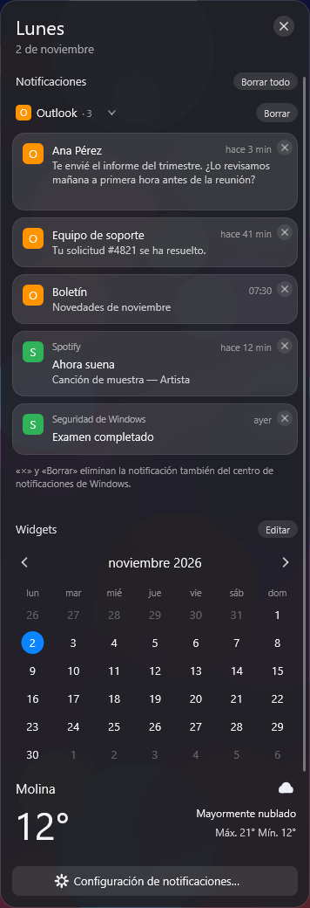

Tu Windows 11, con un escritorio
hecho a tu medida
Barra superior, Dock, Spotlight, Launchpad, una isla informativa y módulos de productividad. Inspirado en la experiencia de macOS, hecho para Windows.
Ilustración de cómo se ve, no es una captura de pantalla.
Un escritorio completo, pieza por pieza
Cada parte se enciende y se apaga por separado desde un solo panel de Ajustes. Usa solo lo que te sirva.
Todo a un clic, arriba
El menú de la app activa, el reloj y el Centro de control: Wi-Fi, Bluetooth, sonido, brillo, modo oscuro y más. Con un panel para el Tiempo, Limpieza, Periféricos y tu VPN.
- Activa y desactiva tu VPN de Windows desde un icono de escudo.
- Elige qué iconos ver y su orden.
Centro de control
Tus apps, y sus ventanas
Iconos reales, apps ancladas y una vista previa de las ventanas abiertas, con un × para cerrar cada una sin abrirla. Un Dock por cada monitor.
- Se oculta solo y reaparece al acercar el mouse.
- No se mete cuando juegas o ves un video a pantalla completa.
Encuentra y abre lo que sea
Escribe para buscar apps y acciones, o para calcular y convertir unidades, con una vista previa a la derecha. O abre Launchpad para ver todas tus aplicaciones en una cuadrícula.
- Ordena por lo que más usas.
- Ejecuta acciones de tus módulos, como cambiar la distribución de ventanas.
Una isla que sabe lo que pasa
Música con letras, volumen, brillo, notificaciones, descargas y un portapapeles con historial. Y una estantería para guardar archivos, carpetas, texto e imágenes a mano.
- El banner de descargas se ajusta a su contenido.
- Un clic en una notificación abre la app que la envió.
Artista de muestra
Las de Windows, ordenadas
Las notificaciones reales de Windows en un panel lateral, agrupadas por app, con un calendario y el tiempo. Descarta una o todas sin salir de tu trabajo.

Captura real con datos de muestraHaz más con menos clics
Seis módulos, cada uno con su interruptor y atajos que tú configuras. Apagados no dejan atajos ni tareas en marcha.
Todas tus ventanas, de un vistazo
Pulsa Ctrl+Alt+↑ para ver las ventanas del escritorio actual en una cuadrícula. Busca por nombre y elige, o ciérralas desde ahí.
Ventanas en su lugar
Arrastra una ventana con Mayús y suéltala en una zona. Elige entre distribuciones listas o dibuja las tuyas con el editor de zonas.
- Un atajo mueve la ventana a la zona siguiente.
- Desde Spotlight, reordena todas las ventanas abiertas.
Copia texto de cualquier pantalla
Selecciona una región con Ctrl+Alt+Espacio y Hatsu reconoce el texto en tu propio equipo, sin enviar nada a Internet, y lo copia.
Martes 12 de noviembre · 10:30
Sala Aurora
Reunión de equipo · Martes 12 de noviembre…
Tu mouse y tu teclado, a tu manera
Esquinas activas, botones laterales del ratón y atajos que abren Mission Control, Spotlight, Launchpad, cambian de escritorio o hacen una captura.
Accesos rápidos: agrega tus aplicaciones o páginas web favoritas y ábrelas con una esquina, un botón o un atajo.
Gestures
Libera espacio sin riesgos
Analiza primero y no borra nada hasta que lo confirmes. Solo trata archivos temporales y cachés que se recrean solos; nunca tus documentos, fotos, descargas ni proyectos.
Limpieza
Más piezas para tu día a día
Capturas y grabación
Captura una región, la pantalla o una ventana, con galería y editor. Y graba.
Espacios de trabajo
Guarda la distribución de tus ventanas y restáurala cuando quieras.
Hatsu Connect
Batería, estado y notificaciones de tu iPhone en el PC.
Periféricos
La batería de tu mouse, teclado y auriculares en la barra, con avisos.
Extensiones
Una API para sumar tus propias herramientas, como programas aparte y opcionales.
Global Menu
Los menús de la app activa aparecen arriba, y los originales siguen en su ventana.
Instalar Hatsu Desktop
Requiere Windows 11.
Microsoft Store
La forma más simple: Microsoft firma el paquete y se actualiza solo.
Paquete portable
Cada versión de desarrollo genera un ZIP en Actions. Descomprímelo en una carpeta aparte y ejecútalo desde ahí, sin instalar nada.
Compilar desde el código
Requiere el SDK de .NET 10. Las instrucciones están en el README del repositorio.
Tu información se queda contigo
- Sin telemetría ni cuentas.
- Live Text reconoce el texto en tu propio equipo.
- Los agentes de IA vienen desactivados de fábrica en la versión de la Store.
- Código abierto bajo licencia Apache-2.0.
Ordenado por dentro
- Cada módulo se apaga de verdad: libera sus atajos, ganchos y hilos.
- Sin APIs privadas de Windows ni dependencia de PowerToys.
- Documentación abierta, con lo que está validado y lo que no.